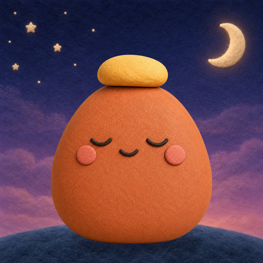
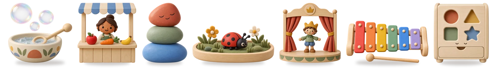

Calm toys for
little hands.
Nine felt-and-wood toys for ages 2–6. Feed, build, sort, make music, and wander through a meadow. No ads, no tracking, no accounts.
For iPhone and iPad.

Made for small hands
Pictures and touch guide every toy. Nothing to read, no levels, no scores, and nothing to lose.
Grown-ups set the pace
Choose which toys are on the shelf, turn sound and motion down, and set a play timer that ends with a calm rest.
Private by design
No child accounts, no ads, no analytics. Settings and creations stay on your device. Privacy policy